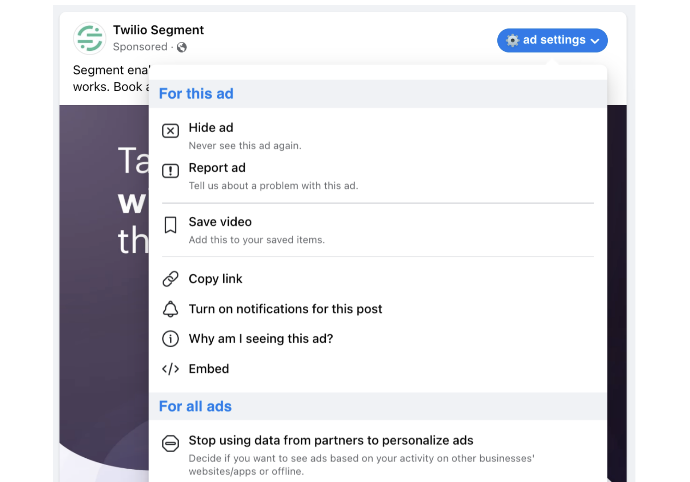
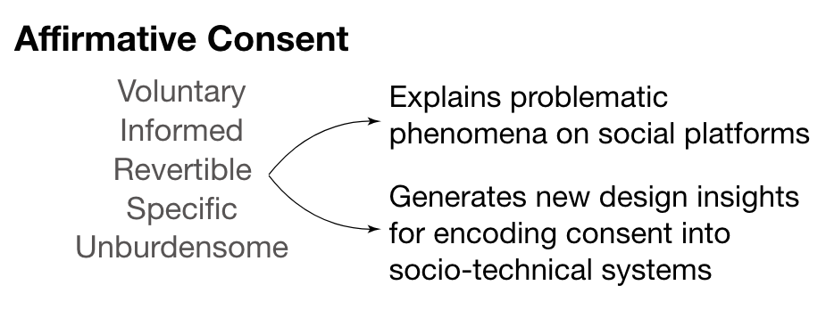

Selected First Author Publications
Full Papers

Less is Not More: Improving Findability and Actionability of Privacy Controls for Online Behavioral Advertising
Jane Im, Ruiyi Wang, Weikun Lyu, Nick Cook, Hana Habib, Lorrie Cranor, Nikola Banovic, Florian Schaub
CHI 2023
Jane Im, Ruiyi Wang, Weikun Lyu, Nick Cook, Hana Habib, Lorrie Cranor, Nikola Banovic, Florian Schaub
CHI 2023
Covered by The Wall Street Journal (The article is behind a paywall, but UMSI also wrote about it here.)
Selected to present at PrivacyCon 2024 (hosted by FTC)
Selected to present at PrivacyCon 2024 (hosted by FTC)

Yes: Affirmative Consent as a Theoretical Framework for Understanding and Imagining Social Platforms
Jane Im, Jill Dimond, Melody Berton, Una Lee, Katherine Mustelier, Mark Ackerman, Eric Gilbert
CHI 2021 Best Paper Honorable Mention
Jane Im, Jill Dimond, Melody Berton, Una Lee, Katherine Mustelier, Mark Ackerman, Eric Gilbert
CHI 2021 Best Paper Honorable Mention
I want to give a shoutout to the incredible Una Lee (who is one of the paper's co-authors). This work builds on and could not have existed without Una's impactful work on consentful technologies. Una introduced the term "consentful technology"—which inspired many people, including me.✨
Organized Panel Proposals

Improving Advising Relationships Between PhD Students and Faculty in Human-Computer Interaction
Jane Im, Himanshu Zade, Steve Oney, Pamela Wisniewski, Kentaro Toyama
CHI 2024 Extended Abstract
Jane Im, Himanshu Zade, Steve Oney, Pamela Wisniewski, Kentaro Toyama
CHI 2024 Extended Abstract
Posters
Understanding How to Design a Social Computing System that Helps PhD Students Collectively Navigate Mistreatment or Abuse in Advising Relationships
Jane Im, Kentaro Toyama
CHI 2024 Extended Abstract
Jane Im, Kentaro Toyama
CHI 2024 Extended Abstract
forthcoming